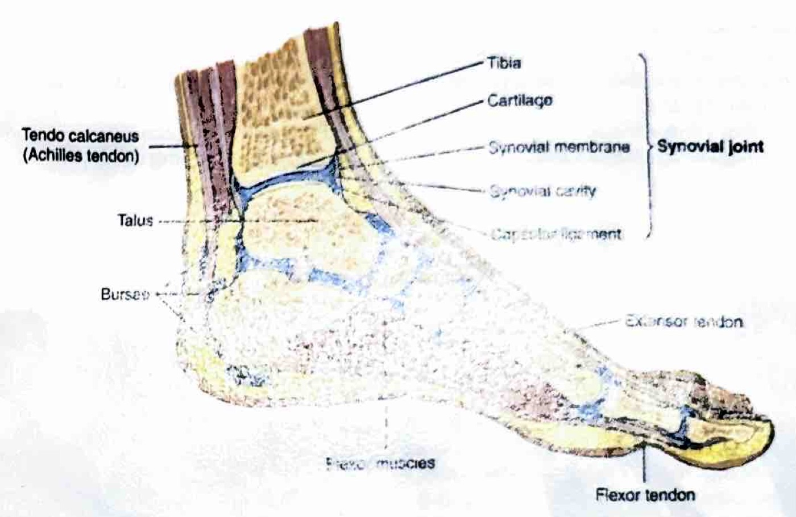

Jarvis · Chapter 23 · rebuilt from the textbook
A preview of the new build: original walk-through, and the real textbook figure made interactive.
Every musculoskeletal finding you will ever document is one of four structures misbehaving: bone, cartilage, synovium, or tendon and muscle. Learn which one a symptom points at and the assessment writes itself.
Tap Explore to read any structure. Cover labels hides the printed words so you can test yourself, and Quiz me asks you to find each one.

One finding at a time — decide whether it points at osteoarthritis or rheumatoid arthritis. Swipe the card, or use the buttons.
Boggy, spongy swelling = inflamed synovium (think RA). Hard, bony enlargement = osteophytes (think OA). Same swollen joint, two different diseases, told apart by what it feels like.
Ask how long morning stiffness lasts. Over an hour points to rheumatoid; under 30 minutes, easing as they move, points to osteoarthritis. One question, two diseases separated.
Tendon = muscle to bone (moves the joint). Ligament = bone to bone (stabilizes the joint). A torn ligament gives instability; a torn tendon gives lost movement.
Preview build · Figure 23.1 from the course text, 12 labels hand-placed and verified. The rest of the chapter is not built yet — this is here so you can judge the direction before I commit to all 74 pages.